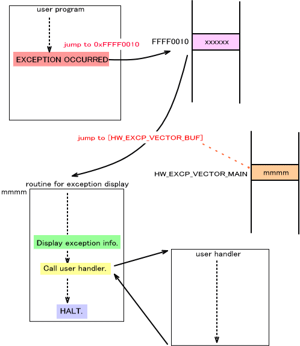

ここでは、ARM プロセッサによる例外が発生したときに NitroSDK でその例外の情報を表示するための例外表示システムについて説明します。
例外表示のための初期化
プロセッサ例外発生時にレジスタや例外の種類などを表示する機構が NitroSDK
に用意されています。この例外表示システムを有効にするための初期化関数は
OS_InitException() ですが、OS_Init() から呼ばれていますので、OS_Init() をアプリケーションから呼んでいる場合は初期化関数を改めて呼ぶ必要はありません。
この初期化関数では、例外が発生したときに制御の移るアドレス (SDKの例外ベクタ) を例外表示を行なう関数のアドレスに設定します。ただし、デバッグツールでは例外を使用して一部のデバッグ機能を実現しているため、例外表示は行ないません。現在の動作環境は自動的に判別しますので、これに関してアプリケーションから何かをする必要はありません。
例外表示システムはデバッグ用の機能なので FINALROM ビルドでは無効になります。
例外ベクタの位置
ARM プロセッサの仕様で、例外ベクタのアドレスを 0x00000000 〜 0x0000001C か 0xFFFF0000 〜 0xFFFF001C の何れかを選択できるようになっています。前者を「正規ベクタ」、後者を「ハイベクタ」と呼びます。
OS_SetExceptionVectorLower() で例外ベクタのアドレスを 0x0000000 〜 0x0000001C (正規ベクタ) にします。
OS_SetExceptionVectorUpper() で例外ベクタのアドレスを 0xFFFF0000 〜 0xFFFF001C ( ハイベクタ) にします。
NitroSDK ではデフォルトではハイベクタを使用しています。特に理由がなければハイベクタを使用し、この設定は変更しないでください。
ユーザハンドラの設定
例外が発生したときに、ユーザが設定した例外ハンドラに制御を移すことが可能です。OS_SetUserExceptionHandler() でハンドラを登録してください。
例外が発生した後の処理
ARM には以下の例外が存在します。
| 例外タイプ | 正規ベクタアドレス | ハイベクタアドレス |
|---|---|---|
| リセット | 0x00000000 | 0xFFFF0000 |
| 未定義命令 | 0x00000004 | 0xFFFF0004 |
| ソフトウェア割り込み | 0x00000008 | 0xFFFF0008 |
| プリフェッチアボート | 0x0000000C | 0xFFFF000C |
| データアボート | 0x00000010 | 0xFFFF0010 |
| IRQ | 0x00000018 | 0xFFFF0018 |
| FIQ | 0x0000001C | 0xFFFF001C |
このうち IRQ 例外は割り込みとして使用していますので、以下のフローからは除外します。( 割り込み(概要) を参照 )
例外が発生すると、上の表に記載されているベクタアドレスのアドレスに制御が移ります。通常はハイベクタアドレスを使用します。
その後、デバッグツールを使用している場合はデバッガ専用の処理ルーチンに制御が移ります。この場合はデバッガのための処理を行なってプログラムに復帰しますので、以下は デバッグツールを使用していない場合について記述しています。
次にシステム領域内の HW_EXCP_VECTOR_MAIN に格納されているアドレスに制御が移ります。( ARM7 では専用ワークRAM のオフセット 0x7FDC の位置となります。) ここにはNitroSDK の例外表示のための関数のアドレスがセットされています。この設定は OS_InitException() で行なわれます。
そのルーチン内で、例外表示を行ない、OS_SetUserExceptionHandler() で登録したユーザハンドラを (登録されていれば) 呼び出します。そしてプログラムを停止します。
例
下はデータアボート例外が発生した場合の例です。データアボート例外に対応するハイベクタのフックアドレスは 0xFFFF0010 なので、0xFFFF0010 にジャンプします。その後、HW_EXCP_VECTOR_BUF に格納されたアドレスを手がかりにSDKの例外表示ルーチンに制御が移り、レジスタ情報などの例外表示を行なった後、ユーザハンドラが呼び出されます。

2005/03/08 用語統一 [割込み] → [割り込み]
2004/12/14 用語や語尾など修正
2004/11/16 初版